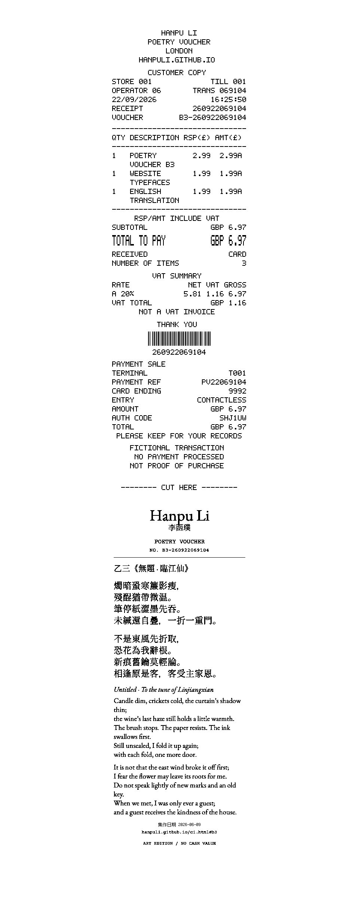

01.1
论三池崇史《初恋》
一篇关于三池崇史《初恋》中性别、义务与类型形式的长篇研究，结合形式细读与可复现核验。
写作 / 电影评论 / 摄影 / 程序 · 伦敦
李函璞
亦以 Caitlyn Lye 署名
约克 · 英语语言与语言学 · 电影 · QMUL
伦敦

看电影的，也写写词。
我的工作多半从写开始：评论、研究、诗词。我也拍照；方法需要工具时，就写软件。
我在意的是：什么被记录，什么被漏掉，证据到底能不能撑住那个主张。
01
电影 / 评论 / 研究
01.1
一篇关于三池崇史《初恋》中性别、义务与类型形式的长篇研究，结合形式细读与可复现核验。
01.2
从旁白、空间与自我规训写到论证本身的边界。
《鹧鸪天 · 连夕灯下试笔，未竟》
二〇二六年九月九日
03
版本 / 研究 / 工具

OSM · Sentinel-2 · Landsat · ECOSTRESS · Python


Python · OAuth 2.1 · macOS Seatbelt · Accessibility
04
制作现场 / 35 mm / 即时成像


数码照片、35 mm 胶片与即时成像胶片。多半是开拍前的那一小时。
06
早期工作 / 生平脉络
商业、建筑与纪实摄影。
北京同志中心志愿写作者；武汉同志中心跨性别方向志愿者，包括协助取得紧急 PEP。
约克大学制作中的场记、翻译与研究工作。